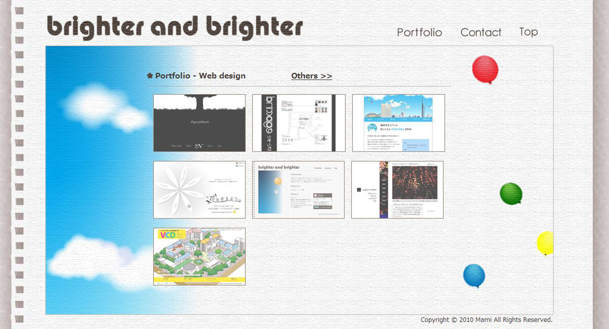
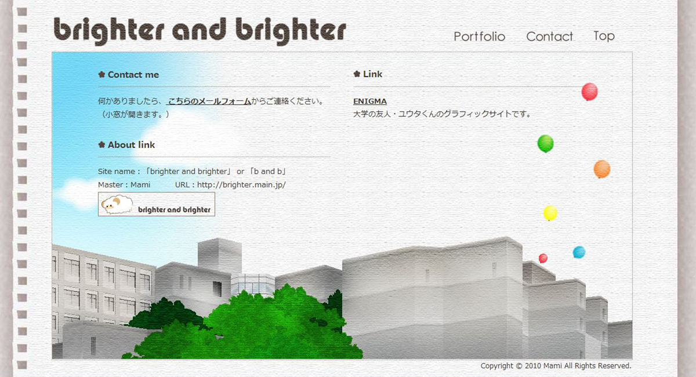
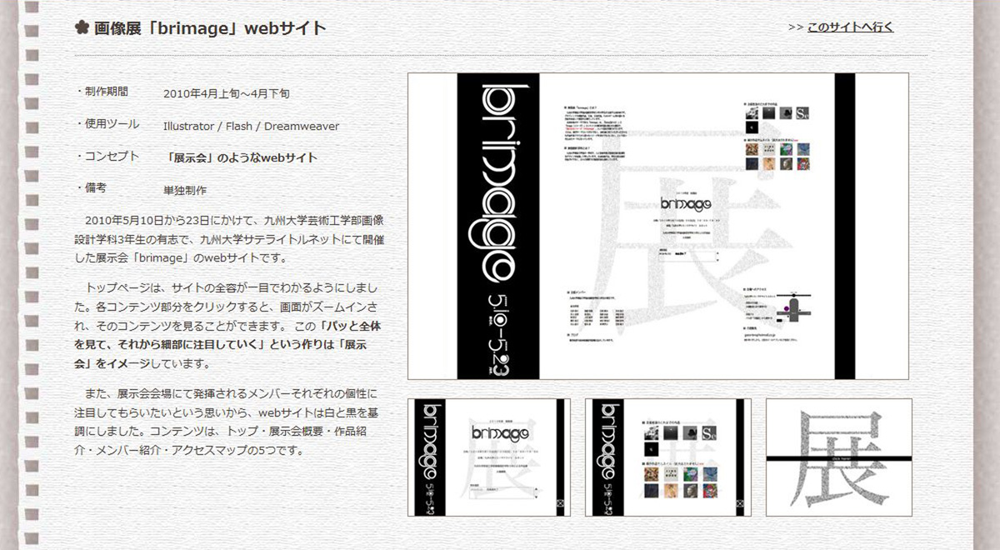

Portfolio * brighter and brighter
 ポートフォリオサイト「brighter and brighter」
ポートフォリオサイト「brighter and brighter」
>> このサイトへ行く
- ・制作期間
- 2010年10月中旬〜10月下旬
- ・使用ツール
- Illustrator / Photoshop / Dreamweaver
- ・コンセプト
- 「自分らしさ」を表現
- ・備考
- 単独制作
当webサイトです。自分らしいものを沢山詰め込みたいという思いで、自由に制作しました。
「brighter and brighter」というサイト名は、私が昔から「bright（光る、輝く、鮮やかな）」という単語が好きなことと、 これから様々な経験をして今よりもずっと成長したいという思いから、brightを「だんだん、ますます」という意味になる文型に当てはめて名付けました。
基礎となるページの背景は、自分が普段案を練ったりメモを取ったりするのに頻繁に使用しているスケッチブックをイメージしています。
コンテンツは、トップページ・ポートフォリオページ1（webデザイン）・ポートフォリオページ2（flasfゲーム、グラフィック、授業課題）・コンタクトページです。
 
各ページの背景は一続きになっていて、それを縦横のスクロールで移動する形になっています。 一番下のページの風景は、webデザインに興味を持っている今の私のルーツである、大学のキャンパスの風景です。 そこから色とりどりの個性が溢れ出し、飛び立っていく中で、果ては宇宙のような遥か高い場所まで到達できるように頑張りたい。 この背景にはそんな思いを込めています。
各作品のページには、イメージが伝わりやすいよう、大きめの画像を配置しました。
